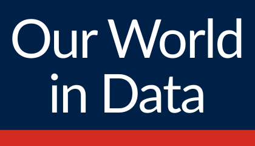
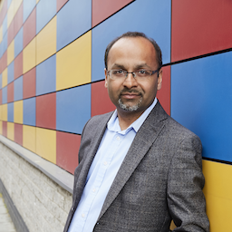
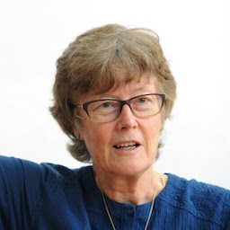
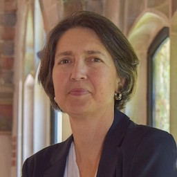
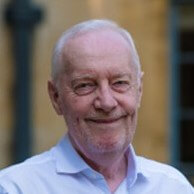

Global Change Data Lab is a nonprofit organization and a registered charity in the education sector (Company
Number 11725483 and Charity Number 1186433, Charity Commission for England and Wales).
Our purpose is to advance education in how global living conditions and the earth’s environment are changing,
through the production and maintenance of public online resources. Our flagship project, the web publication
Our World in Data (ourworldindata.org), is focused on increasing the use of data and evidence to make progress
against the world’s largest problems.
Our Work
We believe that a key reason why societies fail to achieve progress is that we do not make enough use of
existing research and data: important knowledge is often stored in inaccessible databases, locked away behind
paywalls and buried under jargon in academic papers.
Our work is therefore focused on producing free and open educational resources that help make the knowledge on
the big problems accessible and understandable.

Visit our flagship project Our World in Data
Board of Trustees

Hetan Shah
Chair of the Board
Chief Executive, British Academy and Visiting Professor, Policy Institute, Kings College
London
Hetan Shah is chief executive at the
British Academy, the UK’s national academy for humanities and social
sciences. He is Visiting Professor at the Policy Institute, Kings College London and a Fellow at Birkbeck
College, University of London. Hetan serves on a number of advisory boards including for the Bennett
Institute for Public Policy at the University of Cambridge, the UCL Policy Lab and the Resolution
Foundation.

Professor Wendy Carlin
Professor of Economics, Department of Economics, University College London, UK
Wendy Carlin is one of the directors at Global Change Data Lab, and she is a founding member
of our Board of Trustees. She is Professor of Economics at University College London, Research Fellow of the
Centre for Economic Policy Research, and an external professor at the Santa Fe Institute. She is also
leading the
CORE Project, an
international educational project to reform the undergraduate economics curriculum. The CORE Project
produces open-access e-books used in universities around the world. She is also a member of the Expert
Advisory Panel of the UK’s Office for Budget Responsibility.

Rachel Glennerster CMG, FRSA
Associate Professor of Economics, Division of
Social Sciences, University of Chicago
Rachel Glennerster is an Associate Professor of
Economics in the Division of Social Science at the University of
Chicago. Her research includes randomized trials of health, women’s
empowerment, education and political accountability in West Africa and
South Asia as well as ways to stimulate innovation. She is Faculty
Director of the Market Shaping Accelerator at UChicago which analysis
approaches to shape markets to deliver innovation to solve the world’s
most pressing problems. Rachel Glennerster served as Chief Economist
at the Foreign Commonwealth and Development Office and the Department
for International Development in the UK and as Executive Director of
the Abdul Latif Jameel Poverty Action Lab. In 2021, Pr. Glennerster
was appointed Companion of the Order of St Michael and St George for
services to international development. She currently serves as Chair
of the Board of Teaching at the Right Level Africa.
Sir Andrew William Dilnot CBE
Warden of Nuffield College
Andrew Dilnot is the Warden of Nuffield College
Oxford. He was chair of the UK Statistics Authority from 2012 to 2017,
the founding presenter of BBC Radio 4’s programme ‘More or Less’, the
Principal of St Hugh’s College Oxford from 2002-2012, and the Director
of the Institute for Fiscal Studies from 1991-2002.
Dr. Claire Melamed
Chief Executive Officer at the Global Partnership
for Sustainable Development Data
Claire Melamed leads the Global Partnership for
Sustainable Development Data’s Secretariat. She was previously
Managing Director of the Overseas Development Institute, has worked in
the office of the UN Secretary General, and for a number of NGOs. She
is an Affiliated Researcher at the Bennett Institute for Public Policy
at the University of Cambridge and serves on the Board of Full Fact.
She is based in London.
Michael Blastland
Writer and Broadcaster
Michael Blastland is a writer and broadcaster, best
known as the creator (with Andrew Dilnot) of More or Less on Radio 4,
and as presenter and producer of numerous other series. In a varied
career, he’s also written several popular science books about numbers,
chance, risk, and related subjects; was a board member of the Winton
Centre for Risk and Evidence Communication; has advised large-scale
research projects; taught for many years on BBC courses for senior
journalists and elsewhere; and most recently served as a non-executive
director and deputy chair of Royal Papworth Hospital, and co-authored
a BBC inquiry into the impartiality of its coverage of tax, public
spending, borrowing, and debt.
Executive Directors
Dr. Max Roser
Executive Co-Director, Global Change Data Lab
Programme Director, Oxford Martin
Programme on Global Development, University of Oxford
Max Roser leads the project Our World in Data. He founded
this project in 2011 and for several years was the sole author. His research focuses on poverty,
global health, humanity’s impact on the environment, technology and the history of living conditions. He
is Executive Co-Director of Global Change Data Lab as well as Programme Director of the
Oxford Martin Programme on Global Development at the University of Oxford.
Dr. Esteban Ortiz-Ospina
Executive Co-Director, Global Change Data Lab
Oxford Martin Associate, Oxford Martin
Programme on Global Development, University of Oxford
Esteban Ortiz-Ospina is a Senior Researcher and Content Lead at Our World In Data, as well as
Head of Operations and Executive Co-Director of Global Change Data Lab. His academic work focuses
on economic development, the public sector, education, and a wide range of related topics.
Previous Trustees

Sir David Hendry
Professor of Economics, and former Head of Department of Economics, University of Oxford,
UK
David Hendry was a founding member of our Board of Trustees. He is co-director of
Climate Econometrics at Nuffield College and was previously Professor of Economics at
Oxford University where he was Chairman of the Economics Department from 2001—2007. He was knighted in 2009,
and he is an Honorary Vice-President and past President of the Royal Economic Society.
Professor Stefano Caria
Professor of Economics, Department of Economics, University of Bristol, UK
Stefano Caria was a founding member of our Board of Trustees. He is a Professor in the Department of Economics at the
University of Warwick
specializing in development economics. He is also affiliated with
J-PAL,
CEPR,
CAGE and the EEE program at
STICERD.
Supporters
Global Change Data Lab is supported by donations from several thousand readers of the web publication
Our World in Data, as well as grants from the Quadrature Climate Foundation and the Bill and Melinda Gates Foundation.
In the past we have also received support from the World Health Organization, the Department of Health and Social Care in the United Kingdom, and many other generous
individuals and organizations that have made contributions to our work.
You find our accounts and a full description of how we are funded in our Annual
Report; and you can read the list of donors and supporters on Our World in
Data’s Funding Page.
Donations from readers and users of our products are essential to our work, providing us with the stability and
independence we need. If you want to support our work, you can donate directly using any of the available
options here (or you can send us
an email to donate@ourworldindata.org).
Oxford Partnership
Our project Our World in Data is the result of a collaboration between researchers of the Oxford Martin
Programme on Global Development at the University of Oxford, who are scientific contributors of website
content; and our team at Global Change Data Lab, who curate, prepare, publish and maintain the website
ourworldindata.org and all the
underlying resources and data tools.
Our approach is to combine academic expertise with state-of-the-art software development, to communicate the
research and data we need to tackle the world’s largest problems.

Read more about the Oxford Martin Programme on Global Development